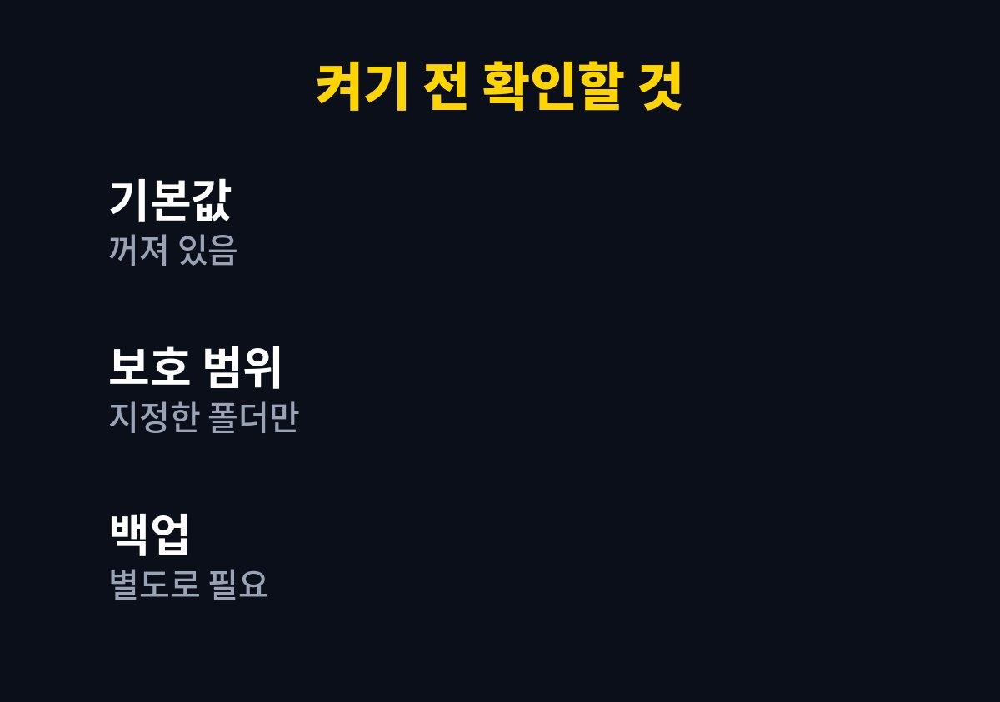
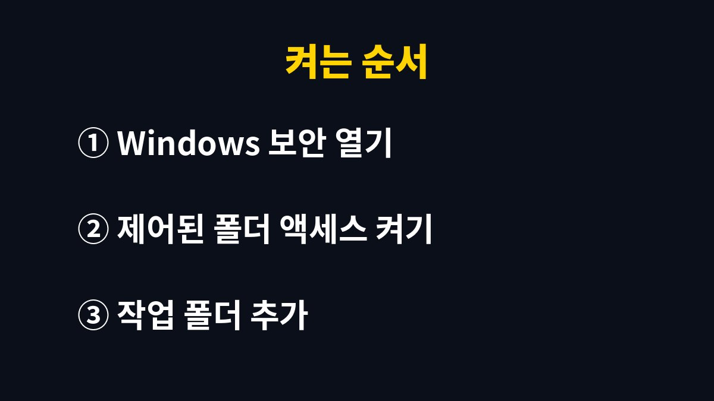

윈도우11 랜섬웨어 방지는 Windows 보안 앱의 제어된 폴더 액세스를 켜야 작동하며, 이 기능은 기본으로 꺼져 있다.
켜면 허용되지 않은 앱이 문서·사진 같은 보호 폴더의 파일을 바꾸지 못하게 막지만, 평소 쓰던 프로그램이 저장에 실패하는 일이 생길 수 있다.
켜기 전에 무엇이 막히고 어떻게 풀어 주는지 알아 두면 당황할 일이 줄어든다.
Windows 보안의 바이러스 및 위협 방지 안에는 랜섬웨어 방지 항목이 따로 있다.
그 안의 제어된 폴더 액세스는 처음 설치했을 때 꺼진 상태다.
백신이 실시간으로 돌고 있어도 이 스위치는 별개다.
백신은 알려진 악성 파일을 잡는 데 강하고, 제어된 폴더 액세스는 알려지지 않은 앱이 보호 폴더를 건드리는 동작 자체를 막는 데 쓰인다.
두 장치가 하는 일이 다르다.
보호되는 곳은 보호 폴더로 지정된 위치뿐이다.
기본으로는 문서, 사진, 동영상, 음악, 즐겨찾기, 바탕 화면이 들어가고 다른 드라이브의 작업 폴더는 직접 추가해야 한다.
그리고 이 기능이 있어도 백업을 대신하지는 못한다.
암호화가 시작된 뒤에는 따로 보관한 사본이 있어야 되돌릴 수 있다.
세 가지를 한 문장으로 줄이면 기본값은 꺼짐이고 범위는 지정한 폴더뿐이며 백업은 별도라는 이야기가 된다.
이 세 줄만 알아도 켜고 나서 생기는 대부분의 혼란은 설명이 된다.
Windows 보안 앱을 열고 바이러스 및 위협 방지를 고른 뒤 아래로 내리면 랜섬웨어 방지 항목이 보인다.
처음 들어가면 용어가 낯설어서 아래 표로 정리했다.
| 항목 | 메뉴 이름 | 하는 일 |
|---|---|---|
| 제어된 폴더 액세스 | 랜섬웨어 방지 > 제어된 폴더 액세스 | 허용되지 않은 앱의 보호 폴더 변경 차단 |
| 보호된 폴더 | 제어된 폴더 액세스 관리 > 보호된 폴더 | 기본 폴더 확인, 작업 폴더 추가 |
| 앱 허용 | 제어된 폴더 액세스를 통해 앱 허용 | 차단된 프로그램을 예외로 등록 |
| 랜섬웨어 데이터 복구 | 같은 화면, OneDrive 연결 시 | OneDrive에 저장된 파일 복구 안내 |

작업 폴더를 D 드라이브에 두는 사람은 보호된 폴더 추가 단계를 건너뛰면 안 된다.
그 폴더는 켜 놓아도 보호받지 못한다.
표의 마지막 줄인 랜섬웨어 데이터 복구는 OneDrive를 쓰고 있을 때만 의미가 있다.
OneDrive에 올라간 파일이 공격으로 바뀌었다면 이전 상태로 되돌리는 방법을 안내하는 화면으로 연결된다.
OneDrive를 연결하지 않았다면 이 줄은 건너뛰어도 된다.
스위치를 켜고 나서 아무 일도 안 일어나면 정말 작동하는지 불안해지기 쉽다.
제어된 폴더 액세스는 평소에는 조용히 있다가 허용되지 않은 앱이 보호 폴더에 쓰려고 할 때만 알림을 띄운다.
그래서 알림이 한 번도 없었다면 문제가 없었다는 뜻일 가능성이 높다.
차단이 일어나면 Windows 보안 화면에 차단된 앱 이름과 시각이 남는다.
그 기록을 눌러 보면 어느 프로그램이 어떤 폴더에 쓰려 했는지 알 수 있다.
설치한 기억이 없는 프로그램이 반복해서 차단된다면 허용하지 말고 해당 프로그램부터 지우거나 점검한다.
이 기능이 막지 못한 파일은 결국 사본으로만 살릴 수 있다.
같은 PC 안의 다른 폴더에만 복사해 두면 함께 암호화될 수 있어서 외장 저장장치나 클라우드처럼 평소에는 연결되지 않는 곳에 두는 편이 낫다.
외장 하드는 복사가 끝나면 뽑아 두는 습관이 필요하다.

예를 들어 오래된 회계 프로그램이 문서 폴더에 백업 파일을 만들지 못하고 오류를 띄울 수 있다.
이런 경우 기능을 끄기보다 그 프로그램만 허용 목록에 넣는 편이 안전하다.
출처를 모르는 실행 파일은 허용하지 않는다.
회사 PC는 보안 담당 부서가 정책으로 관리하는 경우가 많아서 스위치가 잠겨 있을 수 있다.
설치와 저장이 잦은 개발용 PC도 막히는 일이 자주 생겨서 켜기 전에 감수할 수 있는지 따져 본다.
나는 문서와 사진 위주로 쓰는 노트북이라면 켜 두는 쪽이 낫다고 본다.
차단 알림이 뜬 순간 급한 마음에 허용부터 누르면 켜 둔 의미가 없어진다.
프로그램 이름과 폴더 위치를 읽고 내가 방금 실행한 것이 맞는지 확인한 뒤 허용한다.
확신이 없으면 허용하지 않고 프로그램을 다시 실행해 알림이 같은 이름으로 뜨는지 본다.
이 기능은 마지막 방어선일 뿐이어서 중요한 파일은 외장 하드나 클라우드에 따로 복사해 두어야 한다.
오늘 할 일은 제어된 폴더 액세스를 켜고, 작업 폴더가 보호 목록에 있는지 한 번 열어 보는 것이다.
참고 자료: Microsoft 지원 「Windows 보안의 랜섬웨어 방지」(2026년 11월 확인)
※ 2026년 기준 공식 안내를 바탕으로 정리한 글이며, 기기·앱 버전에 따라 메뉴 이름이 다를 수 있다.